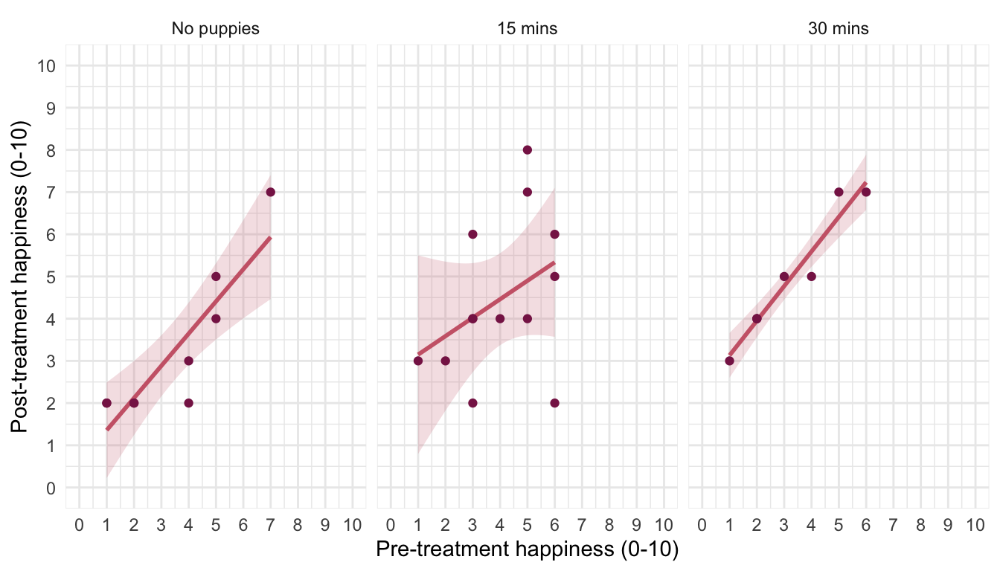
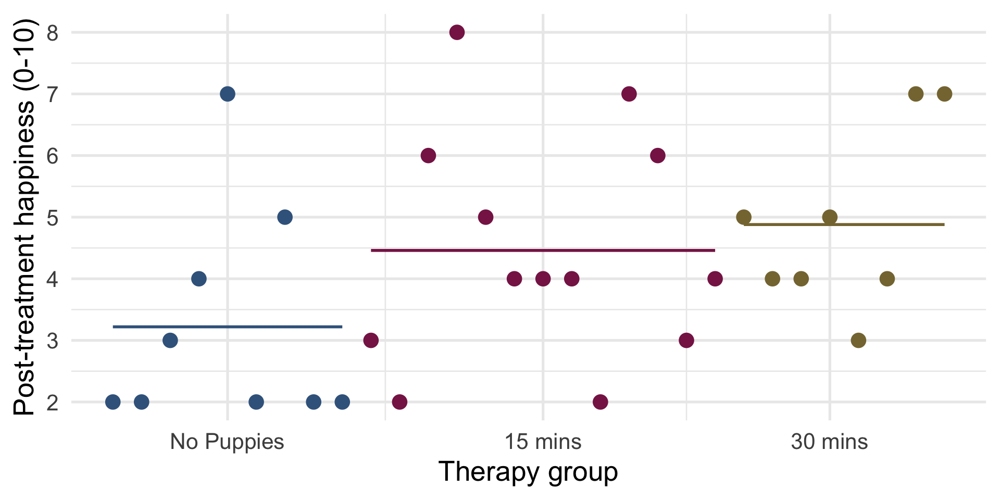
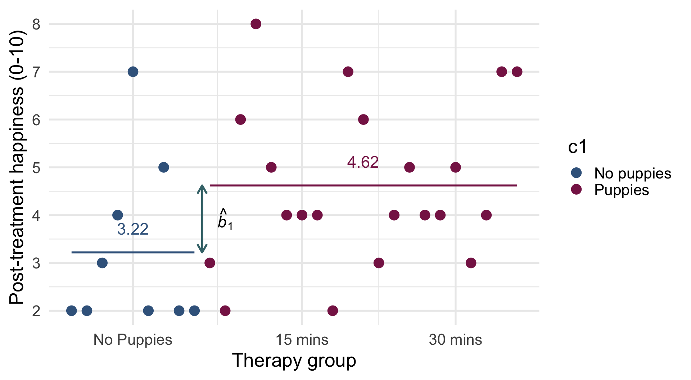
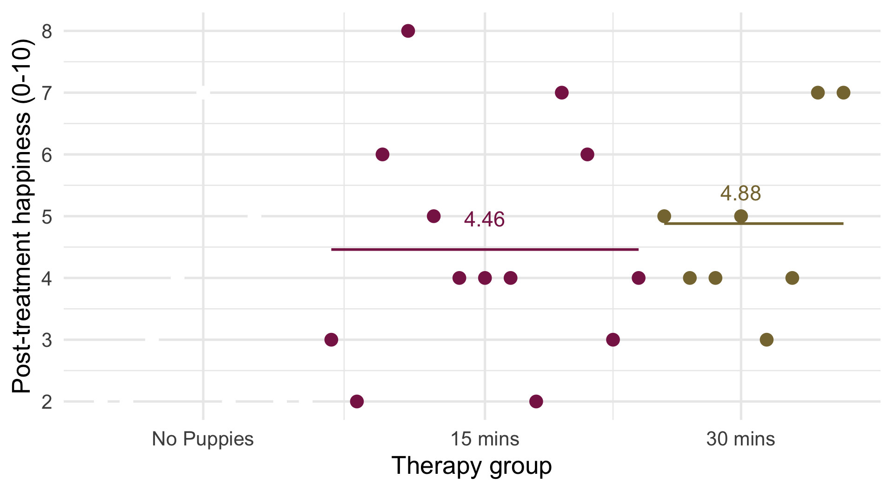

Comparing means adjusted for other predictors
including Analysis of Covariance
University of Sussex


|


Overview

Visualize
ggplot2::ggplot(puptreat_tib, aes(x = pre_happy, y = post_happy)) +
geom_smooth(method = "lm", colour = "#CC6677", fill = "#CC6677", alpha = 0.2) +
geom_point(colour = "#882255") +
coord_cartesian(ylim = c(0, 10), xlim = c(0, 10)) +
scale_x_continuous(breaks = 0:10) +
scale_y_continuous(breaks = 0:10) +
labs(x = "Pre-treatment happiness (0-10)", y = "Post-treatment happiness (0-10)", colour = "Treatment", fill = "Treatment") +
facet_wrap(~dose) +
theme_minimal()

The model
\[ \begin{aligned} \text{happy (post)}_i &= \hat{b}_0 + \hat{b}_1\text{happy (pre)}_i + \hat{b}_2\text{Contrast 1}_i + \hat{b}_3\text{Contrast 2}_i + e_i\\ \text{happy (post)}_i &= \hat{b}_0 + \hat{b}_1\text{happy (pre)}_i + \hat{b}_2\left(\text{puppies vs. none}\right)_i + \\ &\qquad \hat{b}_3\left(\text{30 vs 15 minutes}\right)_i + e_i\\ \end{aligned} \]
Evaluate
The F-statistic with multiple predictors
- The F-statistic is calculated using sums of squares
- Type I (sequential)
- The default in R
- Each predictor is evaluated taking account of previous predictors
- The order of predictors matters!
- Type III
- Each predictor is evaluated taking account of all other predictors
- The order of predictors doesn’t matter

Evaluate fit
| Parameter | Sum_Squares | df | Mean_Square | F | p | ω² (partial) |
|---|---|---|---|---|---|---|
| pre_happy | 37.61 | 1 | 37.61 | 22.20 | < .001 | 0.41 |
| dose | 14.62 | 2 | 7.31 | 4.32 | 0.024 | 0.18 |
| Residuals | 44.05 | 26 | 1.69 |
Anova Table (Type 3 tests)
Evaluate assumptions
Robust procedures

Visualize the contrast model

Visualize contrast 1

Visualize contrast 1

\[ \begin{aligned} \hat{b}_1 &= 4.62-3.22 = 1.4 \end{aligned} \]
Visualize contrast 2
